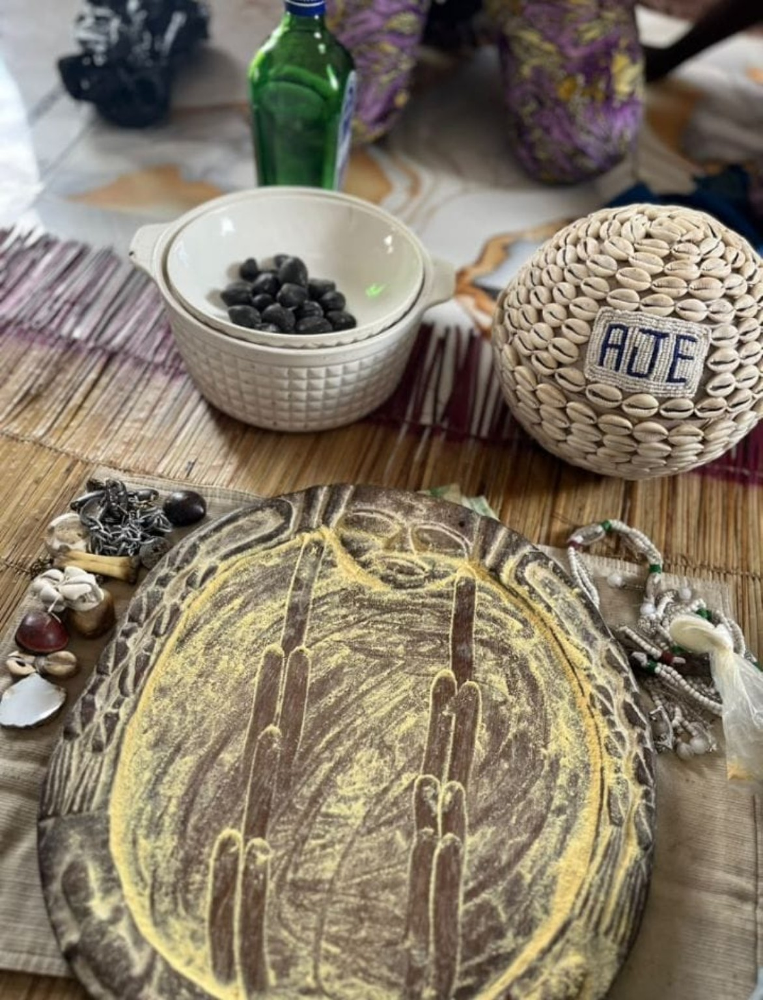

Discover a more
intentional way forward.
Explore our herbal products and traditional consultation services. Contact our team for details, availability and guidance.

Product cards below include the listed prices. Contact ARIYO to confirm current availability and product information.
A thoughtful place to
begin your enquiry.
Browse our catalogue, learn about available services and contact us with questions. Product availability, prices and service details can be confirmed by our team.
Tradition, nature
and connection.
ARIYO Herbal Extracts and Spiritual Empire brings together traditional consultation enquiries, herbal products and personal-care offerings in one place. Browse the catalogue, review available services and contact our team for current details.
Talk to our team ↗Traditional consultation, herbal products and personal care.
ARIYO Herbal Extracts and Spiritual Empire welcomes enquiries about traditional spiritual consultation services, herbal products, personal care products and related offerings. If you are searching for a traditional Babalawo in Oyo Town or Oyo State, or looking for herbal and personal care products in Oyo, contact ARIYO to ask about current services, product details, availability and prices.
Visit us at Oyo London House, 18 Dr Haadi Babatunde Asiyanbi Road, Oyo Town, Oyo State, Nigeria. Please contact us before travelling to confirm opening hours and availability. Product information is provided for general enquiry and is not a substitute for qualified medical advice.
Explore our products.
Discover the catalogue and ask us about availability and pricing.
Shopping cart.
Review your items before sending your order to ARIYO on WhatsApp.
Your cart is empty. Add products to get started.
Sign in to your ARIYO account before checkout. Your order will be saved to your account and sent to ARIYO on WhatsApp after the receipt uploads successfully.
Our services,
your questions.
Contact us privately to ask about process, availability and fees. Services are listed for information; outcomes are not guaranteed.
A note from our team
Contact us to learn more about our products and services.
Rooted in tradition.
Focused on your enquiry.
Ask us directly about ingredients, usage information, service availability, pricing and product details. Product descriptions do not replace advice from a qualified healthcare professional.
Our locations.
Choose a location to view directions. Confirm opening hours before travelling.
Add a verified address in config.js to display the map and directions.
Words from our
community.
Approved customer reviews will appear here when connected to the database.
Have a question or feedback about your experience? We'd be glad to hear from you.
Share your feedback ↗Pay ARIYO by bank transfer.
BankMoniepoint
Account nameAriyo herbal extracts
Account number5216964606
Please confirm your order with ARIYO before making payment. Keep your payment receipt for verification.
Have a question?
Send us a message.
Use this form to enquire about products, services, locations or general information.
- ✳ Product enquiries
- ✳ Service information
- ✳ Location and directions